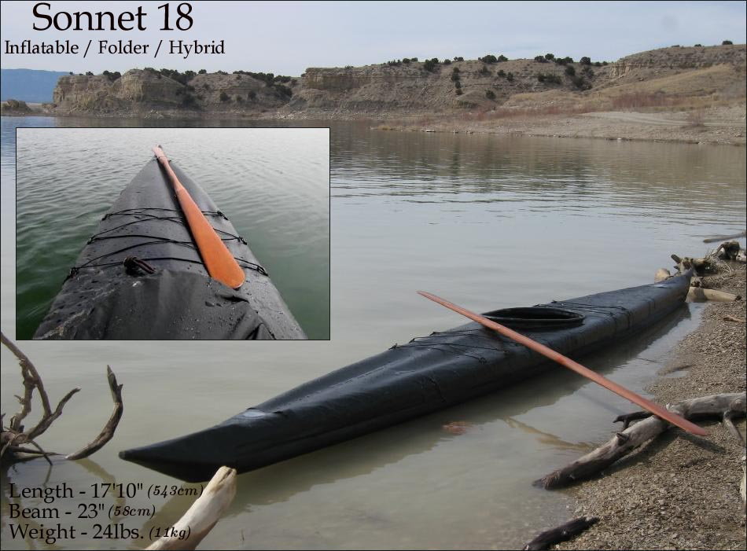

| Menu Previous Page Next Page | |
|

The "Sonnet 18" is an inflatable / folder hybrid as it relies on 4 inflatable
sponsons and 3 stringers. The keel consists of 7/8" tapering to 3/4" aluminum tubes,
and the side stringers are 3/4" tube sections wedged between the two sponsons on each side. I hesitate to call these
chines due to their location. The 1/2" deck ridge is optional and is also used to insert sponsons into the sleeves. The keel (with attached stems)
and the side stringers are all free-standing, though the side stringers are held firmly in place when the sponsons are inflated. Instructions and offsets can be found in the the "Inflatable Kayak Builders Manual. Use the (BACK) key to return.
|
|